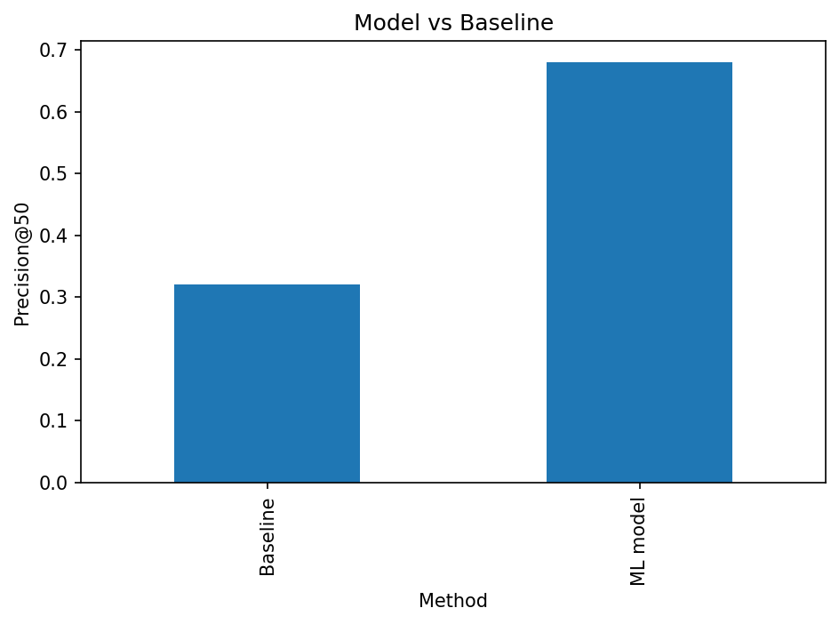

A simple ML-based approach for prioritizing content pages for review
This project asks whether observed search and content signals can help prioritize pages for content refresh review. A page-level dataset was used to construct observable features and compare a simple baseline against an ML ranking approach. The approaches were evaluated using Precision@50 on the same held-out data. The baseline achieved 0.32 Precision@50, while the ML model achieved 0.68. The result suggests that the model provided stronger directional decision-support for prioritizing pages in this experiment, without proving that a refresh would cause better search performance.
Content teams often have more pages available for review than they have time to review. The practical decision is therefore which pages should receive attention first.
This project investigates whether observed search and content signals can be used to rank pages for refresh review. The output is intended to support prioritization when review time is limited.
The project does not attempt to predict Google's algorithm or prove that changing a page causes its search performance to improve.
The analysis uses the FlyRank internship dataset and focuses on anonymized content-level search and performance information.
The unit of analysis is one content page at a prediction point. Features include observable signals such as impressions, sessions, CTR, average position, content age, word count, and engagement where available.
Client-identifying information, private queries, raw URLs, credentials, and product-decision information were excluded from the public analysis. Future information was also kept separate from the feature window where applicable.
The project uses a Refresh / Content Opportunity Scoring approach. Observable page-level signals were used as model features.
The baseline is a simple score based primarily on content age and visibility. The ML approach uses a Random Forest classifier to estimate the likelihood of the defined observed outcome.
The data was separated into training and held-out evaluation data. Precision@50 was selected as the main metric because the practical task is to identify a small group of pages for review first.
Leakage checks were used to avoid using future-window information or product-decision information as model features.
Both approaches were evaluated on the same held-out data.
| Method | Precision@50 |
|---|---|
| Baseline | 0.32 |
| ML model | 0.68 |
Observed improvement: +0.36 Precision@50.
The ML model achieved 0.68 Precision@50 compared with 0.32 for the baseline. This is an observed result on the evaluation data and should not be interpreted as causal evidence.

This analysis uses observed historical data and cannot prove that refreshing a page causes future performance to improve.
The rankings are directional decision-support rather than causal predictions. They do not predict Google's algorithm.
The available data may not contain every factor that affects search performance. A highly ranked recommendation can therefore still be incorrect and should be reviewed by a person before action.
The model produces a ranked queue of pages for refresh review. Each recommendation contains a score, an action label, and a reason code.
The full ranked output is available in the repository: baseline_action_score.csv
The highest-ranked pages should be treated as pages for earlier human review, not as pages that must automatically be changed.
The analysis notebook and generated output are available in the project repository.
Built on the FlyRank ML Internship dataset.
{kind=link}